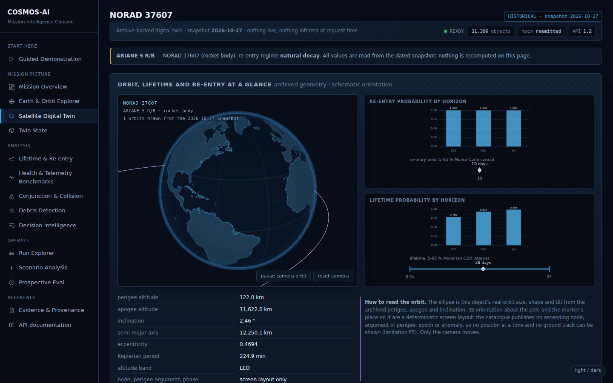
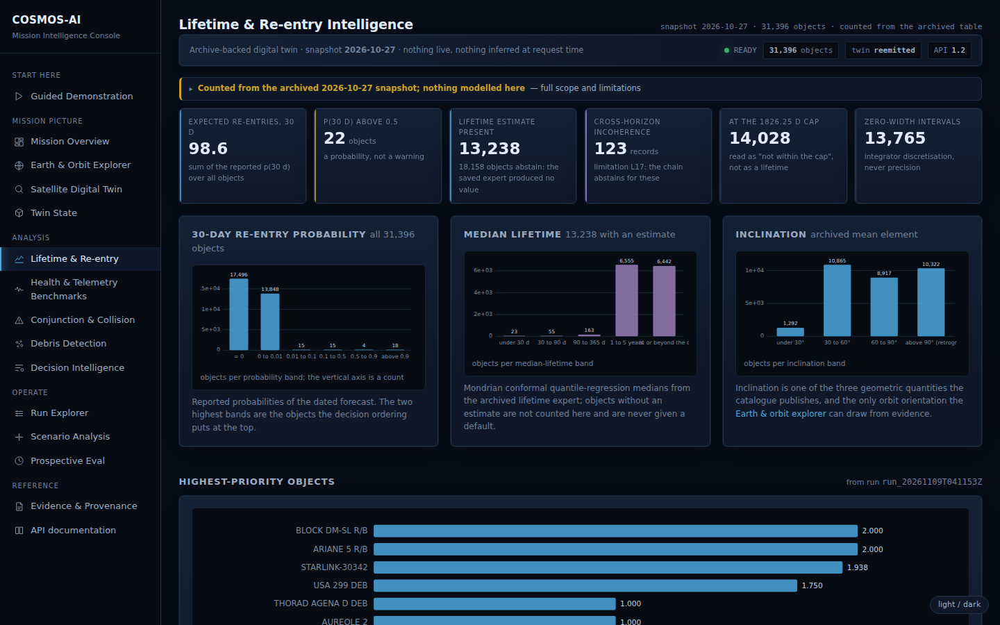
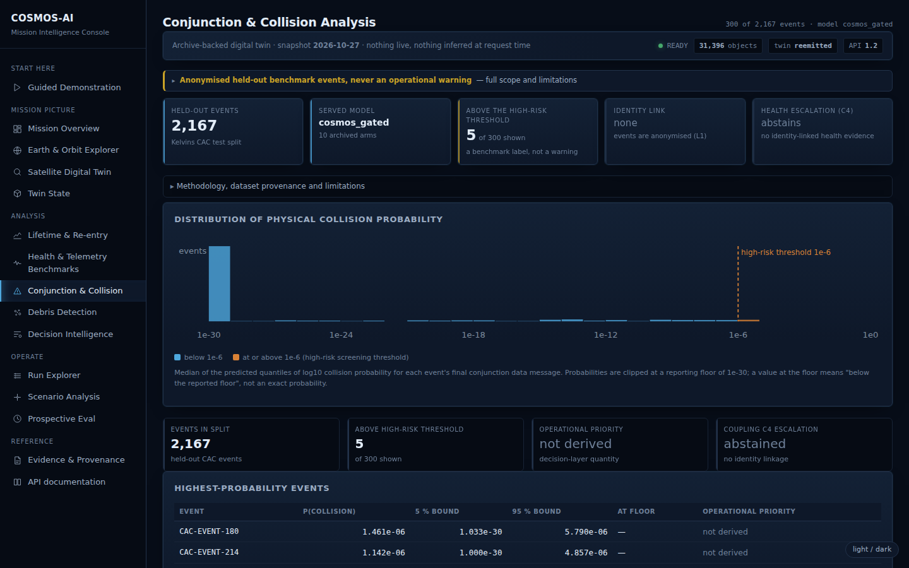
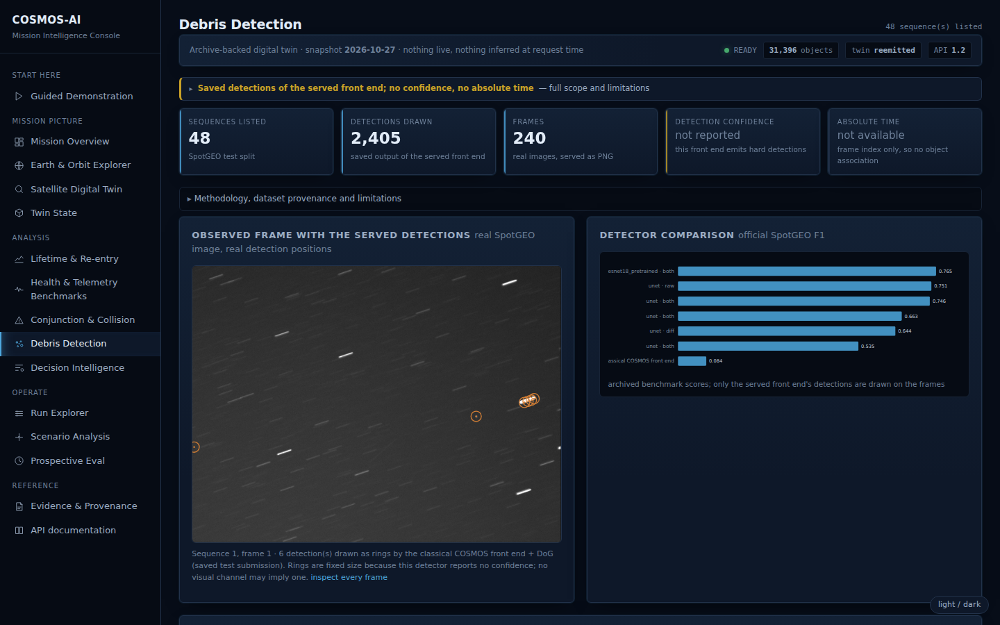
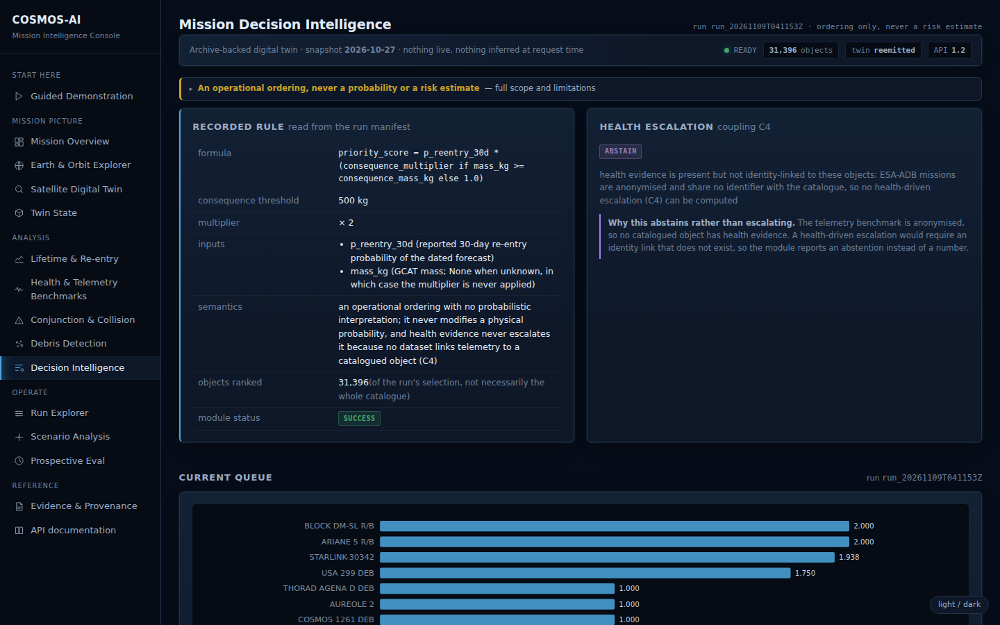
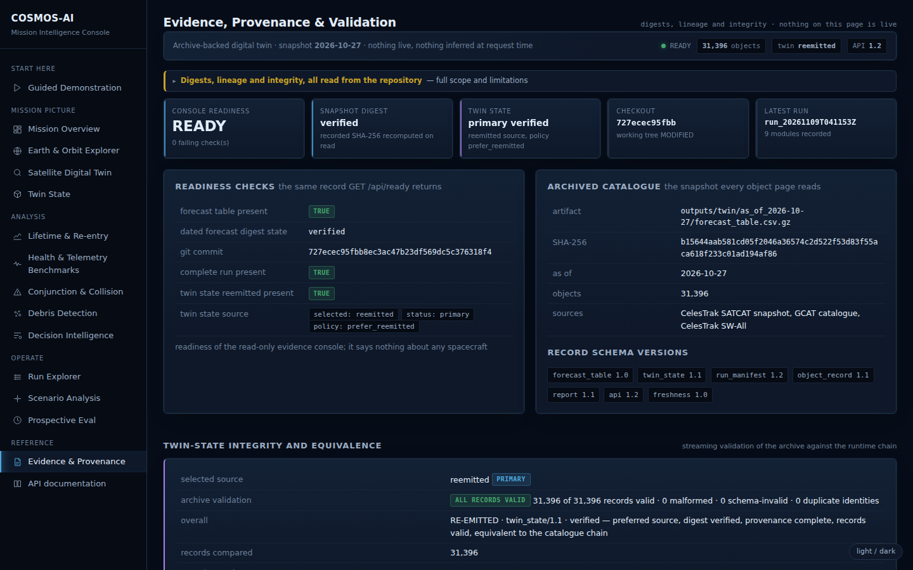
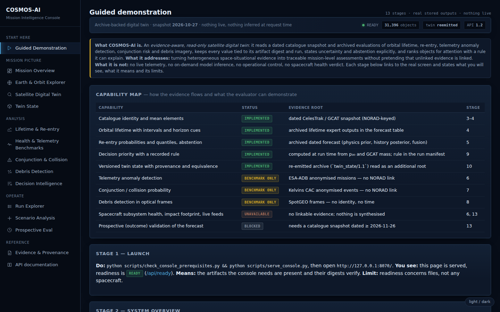

The mission
intelligence console
Nineteen screens over an archived digital twin of 31,396 objects. Server-rendered pages, charts drawn as inline SVG from the real arrays, and a WebGL globe. No model runs when you open a page: every number is read from a hashed file produced by a dated pipeline run.
The hosted console is not published yet
This page embeds the live console once it is deployed and COSMOS_DEMO_URL is set at
build time. Until then, the captures below are unedited screenshots of the running console, taken
on 2026-11-09 at 1440×900, and the console can be run locally in two commands.
Read it the way it is built
Archived, not live
Every screen states the snapshot date and its age. There is no telemetry feed, no tracking, and no request-time inference. The console is an evidence browser over a dated forecast, which is why it can be audited.
Geometry is schematic
Orbit size, shape and inclination are the object's real archived values. Orientation and the marker's place on the ellipse are a screen layout: the catalogue publishes no ascending node, argument of perigee or epoch anomaly, so no position in time and no ground track can honestly be drawn.
Intervals can be degenerate
Of 15,010 re-entry intervals, 13,765 have zero width and 14,028 medians sit at the five-year cap — consistent with all 32 draws agreeing the object outlives the horizon. The console shows that rather than implying a precision it does not have.
Variants are shown disagreeing
The two forecast variants differ by a factor of 10.6 in the expected number of re-entries within 30 days. Both are displayed, because silently picking one would be the more misleading choice.
Captured from the running console
Unedited captures, 2026-11-09, 1440×900, taken by the project's own browser driver together with 27 scripted interaction checks.







